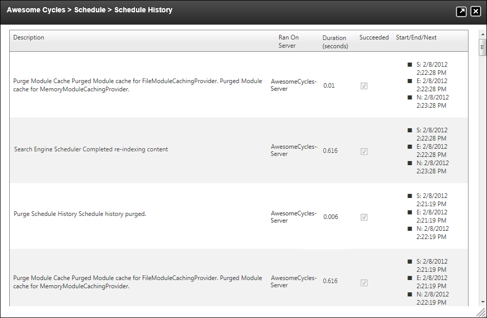

Viewing Schedule History For All Tasks
How to view the history of scheduled tasks that have run on this DNN installation.
- Navigate to Host > Advanced Settings >
 Schedule.
Schedule.
- Click the View Schedule History button.
This displays the following details for each task:
- Description: Description of the task including any notes on the task. E.g. UsersOnline Purge Completed
- Ran On Server: Name of the server where the task was run.
- Duration (seconds): The number of seconds taken to complete the task.
- Succeeded: Displays a checked check box if the task was successfully completed.
- Start: Date and time the task began. E.g. S: 2/8/2012 2:08:26 PM
- End: Date and time the task ended. E.g. E: 2/8/2012 2:10:00 PM
- Next Start: Date and time the task is next scheduled to run. E.g. N: 2/9/2012 2:08:26 PM
- Click the Return link to return to the module.
